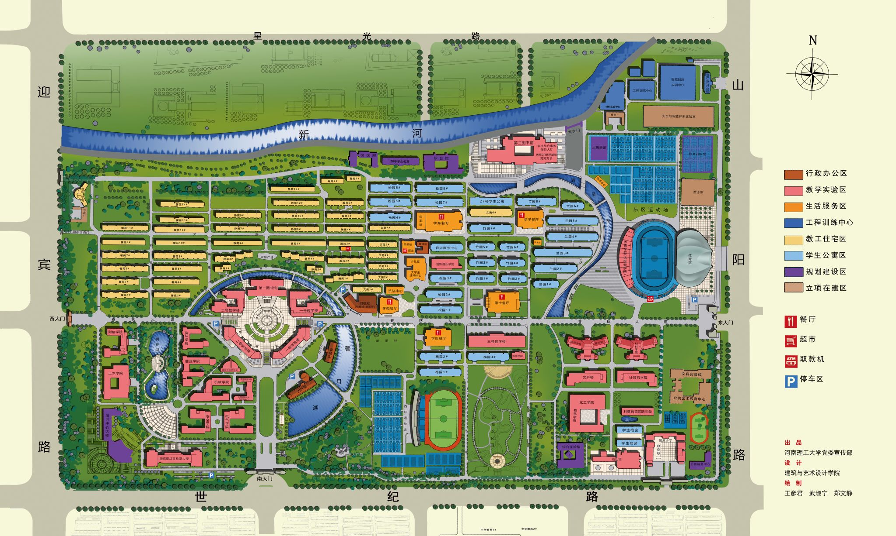

探索 1 / 4 · 地图 1.60×
2025参考地图。主要道路及铺装步行区开放，现场状况与室内仍待核实。
拖动左下角半透明摇杆行走，推得越远走得越快，松开立即停下，靠近金色圆环后，点击角色附近的浮动提示或右下角按钮互动，无需面朝目标。也支持键盘 WASD / 方向键、E / 空格、Esc。竖屏镜头跟随角色，可用地图右上角加减号缩放。已开放同一连通路网上的主要道路和铺装步行区；打开菜单点“显示路网”查看可走范围，未辨清的细路、北部规划区和部分设施不开放。窄路可开启“慢走”精细调整。松开摇杆会立即停下；碰到边界会提示，不允许穿楼。可用“回到化工学院”复位。
本页是对应 Godot 原型流程的 HTML5 轻量试玩版，并非 Godot Web 导出。校园底图采用用户提供并认可的南校区地图同版清晰图。通行带依据图中道路保守描绘，不是测绘数据；现实道路、入口和楼内空间仍待实地核实。不含真实实验模型或结果。
你已走完：校园 → 化工学院 → 实验室 → 实验台。
这里预留器材选择、步骤引导和操作反馈。当前没有实验规则、计算模型或测量数据，不代表真实实验结果。
实验室布局、设备和入口均待核实。角色与剧情尚未接入。
图片完整保留原始标注。地图信息可能随校园建设变化；当前开放图中可辨的主要道路和连通铺装步行区，不保证每条细路均已覆盖。“路网”显示的是玩法通行区域，不是道路测绘或实景导航。

来源：河南理工大学党委宣传部 · 校园地图（页面发布于2025-09-05；南校区图为2025年6月版，与用户提供图同版）。规划/在建状态以2025地图图例为准，不代表2026年现状。出品：河南理工大学党委宣传部；设计：建筑与艺术设计学院；绘制署名见原图右下角。版权归原权利人。本私有试玩使用不代表已获商业游戏使用许可。已对照旧高清图：旧图化工学院位置标为“综合实验楼”，北部发展用地及第二图书馆周边、东区运动场右侧与2025图不同，因此没有用旧高清图替代新版。原图分辨率有限，降低默认倍率而非伪造高清细节。人物为AI生成的现代大学生基础四向行走动画。